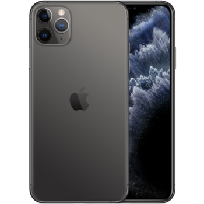
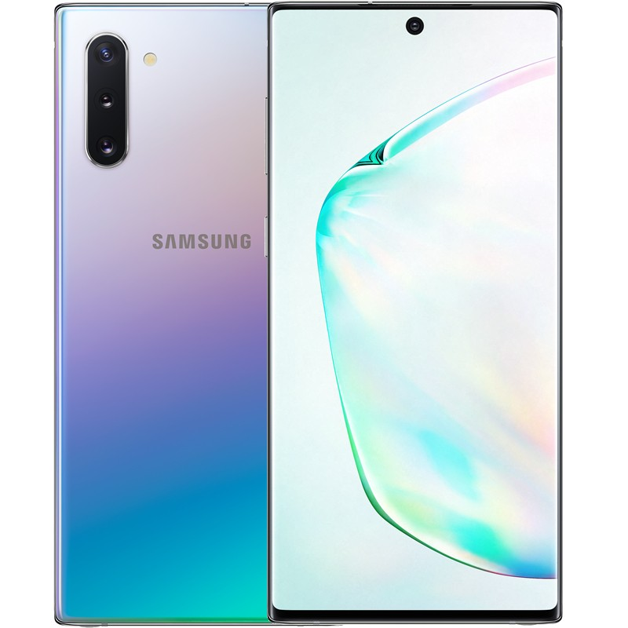

iPhone 11 Pro Max
iPhone 11 Pro Max có thiết kế tương tự như iPhone 11 Pro nhưng kích thước thì to hơn với kích thước màn hình 6.5 inch và toàn bộ máy có kích thước 158 x 77.8 x 8.1 mm. Thiết kế không có nhiều thay đổi trừ hệ thống camera sau được nâng cấp thành 3 camera. Màn hình tai thỏ vẫn được giữ nguyên và chất liệu thép không gỉ giúp iPhone 11 Pro Max bền bỉ hơn.
iPhone 6S 32GB chính hãng VN/A

Đầu tiên, iPhone 6S 32GB chính hãng VN/A là hàng chính hãng do Apple sản xuất theo tiêu chuẩn của thị trường Việt Nam. Máy được phân phối chính hãng thông qua các đại lý ủy quyền của Apple. Vậy iPhone 6S chính hãng VN/A có gì khác những mẫu máy iPhone 6S cũ, iPhone xách tay?
Samsung Galaxy Note 10
Thiết kế khung thép không gỉ và thủy tinh cao cấp cùng màu sắc thời trang, hiện đại Samsung Galaxy Note 10 mang phong cách thiết kế vuông vắn, kích thước 71.8 x 151 mm và độ mỏng chỉ 7.9mm. Với khung điện thoại được làm từ chất liệu thép không gỉ kết hợp với thủy tinh cao cấp được đánh bóng cho khả năng bắt sáng tạo nên ánh quang cùng lớp kính cường lực Gorilla 6 mang đến sự bảo vệ vừng chắc cho Samsung Galaxy Note 10. Các chi tiết, đường nét được gia công tinh tế, tỉ mỉ mang đến sự hoàn hảo cho vẻ ngoài của chiếc smartphone siêu phẩm này. Khả năng kháng bụi, kháng nước chuẩn IP68 mang đến sự bền bỉ, bảo vệ điện thoại khỏi các hư hại do bụi và nước gây ra.